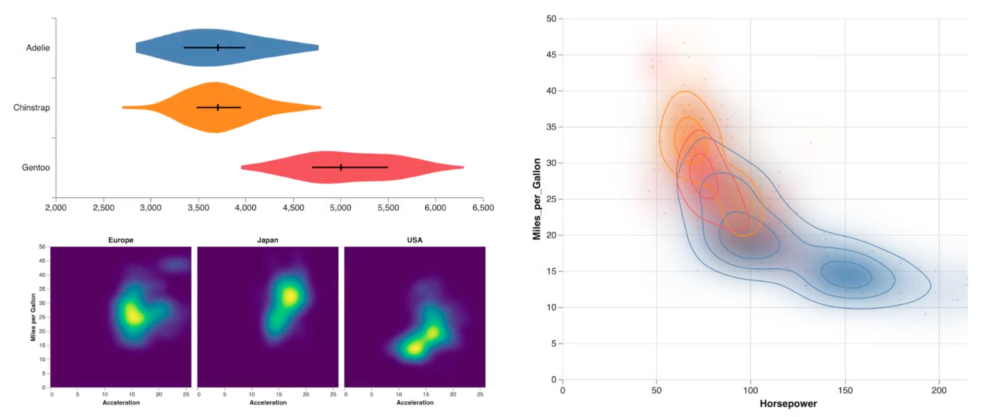

Kernel density estimation (KDE) powers visualizations such as violin plots heat maps and contour plots by modeling a discrete sample as a continuous distribution.
For a set of input data points…

…we represent each point with a kernel function.

We then sum the kernels to form a continuous density estimate. Here we focus on Gaussian kernels which are commonly used in practice.

The spread of the kernels is determined by a bandwidth parameter for Gaussian kernels this is just the standard deviation.

Unfortunately direct calculation is expensive.
For each of measurement points we must sum the contributions of the data points resulting in quadratic complexity.

So how might we achieve fast yet accurate approximate estimates? One approach is to discretize the problem by binning the data.
KDE of data points then reduces to a signal processing task smoothing a grid of bins.

With simple binning the weight of a data point is assigned to the nearest bin.
If we perturb the points we can see how the weight is reassigned across bin boundaries

Alternatively we can linearly interpolate weight across bins the weight is assigned proportionally providing some smoothing.
We evaluate both of these binning methods.

Now, a number of Gaussian smoothing approaches exist for binned data. We focus on linear time methods that first bin the data, an O(n) step, and then make a bounded number of passes over the binned grid, an O(m) step.

The first method we’ll consider is box filtering which approximates Gaussian smoothing by iteratively applying a uniform or box filter [1].

We sum and scale the input values in the filter window to produce an output bin value.

We apply this running sum across the input grid writing results into an output grid.

To perform another iteration we first swap the input and output grids and then apply the box filter again.

But note that the box filters can blur weight outside our original grid extent.
Box filter methods require grids with extra padding, which may increase memory use and running time.

We perform our second iteration…

…swap the grids again perform a third iteration…

…and arrive at our density estimate.
Box filters are fast and easy to implement but they do have important nuances.

We already saw how we must add padding to the grid, but in addition the filter width, which is a function of bandwidth, they can suffer from quantization error.
Here bandwidths of 0.1 and 0.15 both map to a box filter of width 3. The box filter results for the two will be indistinguishable.

Similarly here we get a filter width of 5 bins for bandwidths of both 0.2 and 0.25

To address this, the extended box filter method adds fractional weight to the ends of the filter window[2].

As the bandwidth varies the extended box varies the filter response more smoothly.

Finally let’s consider an approximation developed in the early 90s by Deriche [3], published in the signal processing literature.
This method seems to have been overlooked by statistics and visualization researchers.

Deriche derived a recursive filter approximation for the right half of a Gaussian with parameters he determined via optimization.

We can reverse the equation to model the left half of a Gaussian and then sum the two filter responses.

The method runs in linear time but does involve more arithmetic operations than box filters.

So now let’s evaluate how these linear time methods fare in terms of accuracy.

We’ll start with an impulse test involving a single data point, corresponding to a single Gaussian density.

We can compare direct calculation with box filters…

…and extended box filters.
We see that both methods lead to underestimation of the peak and poor fit to the tails of the distribution.

Meanwhile, the Deriche method achieves high accuracy.

We must also inspect other bandwidth values…

…to more systematically measure the error.

For each KDE method we measure the maximum pixel error for a 100 pixel tall density chart, plotting the results on a logarithmic scale.
We do this across a range of bandwidths.

Here are the error curves for simple binning on a 256 bin grid. We see oscillation in the box method due to filter quantization. The extended box method smooths this out.
Deriche’s method outperforms the others and, at high bandwidth, it’s over an order of magnitude better with a maximum error around one pixel.

Switching to linear binning the Deriche method improves with subpixel accuracy for most tested bandwidths

If we double the number of bins Deriche improves further to near pixel perfect accuracy almost two orders of magnitude better than box filter methods.

Ultimately we care about real world data, so here’s an excerpt from the Palmer penguins data set showing an estimated density of penguin body mass.

At bandwidth 200, all methods appear to perform reasonably well.

However at lower bandwidths we see some significant discrepancies.
The box filter methods may misestimate peaks or erode local optima and in the language of algebraic vis these are hallucinators that is our choice of technique may mislead us with inaccurate visual features [4].

Looking across bandwidths, here are the results for simple binning with 256 bins. Again the Deriche method provides the best performance.

Accuracy improves with linear binning…

and the performance gap widens when doubling the number of bins.

So finally let’s examine 2d density estimation for heat maps and contour plots we’ll look at mileage versus horsepower in the classic cars data set.

Using direct calculation as a baseline we can visualize the difference in estimates when using box and extended box filtering.

We again see that these methods tend to underestimate peaks yet overestimate the size of a distribution.

Errors from the Deriche method however are imperceptibly low on this color scale.

Now if we overlay contours from all three methods we’ll find that Deriche matches the ground truth…

…while the box filter methods can incur missing contours missed estimated peaks and again other hallucinators.

Across bandwidths we see that the Deriche method is consistently better.

Once again this further improves by using linear binning…

…and increasing the grid size.

In conclusion, we find that the combination of Deriche’s approximation in linear binning provides high accuracy with a competitive linear running time. We recommend its use for one and two dimensional density visualizations.
There are some important limitations the method only supports Gaussian kernels not other forms of kernel functions and it’s inherently a one-dimensional technique that is use across multiple dimensions requires separable independent axes.
References
- Efficient synthesis of Gaussian filters by cascaded uniform filters, William Wells. IEEE Transactions on Pattern Analysis and Machine Intelligence. 1993.
- Theoretical foundations of gaussian convolution by extended box filtering, Pascal Gwosdek, Sven Grewenig, Andrés Bruhn, and Joachim Weickert. IEEE Transactions on Pattern Analysis and Machine Intelligence. 1993.
- Recursively implementating the Gaussian and its derivatives, Rachid Deriche. INRIA. 1993.
- An algebraic process for visualization design, Gordon Kindlmann and Carlos Scheidegger. IEEE transactions on visualization and computer graphics. 2014.